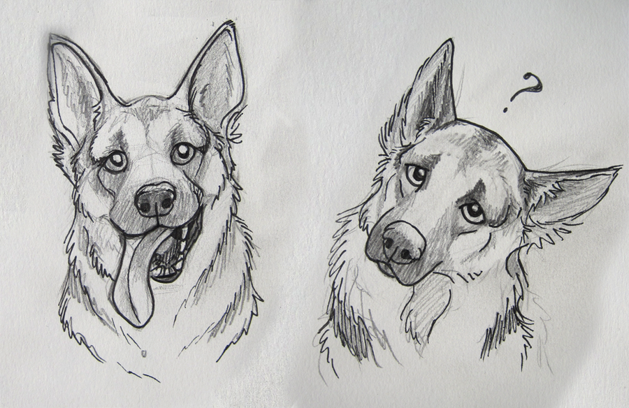

I worry about the future of Ai. Artificial Intelligence grows by the minute, scientists work hard everyday to give the most to their robots. But how far is too far? Are scientists making these robots to help us as companions or are they creating a whole new race of sentient beings? There are already many robots that complete our daily tasks for us such as: Roomba cleaning your messy floors for you and FoldiMate which is used to fold your clothing after laundry. Impressively, Japan is already using robots in restaurants to make sushi and chop vegetables.
All these robots were created to help us do our daily tasks, yet we aren’t paying them or rewarding them for their hard work. Does this mean that they are our new generation of slaves? No it doesn’t because slavery is a term used when you’re keeping your own species to do your work against their will. Although this worries me because if scientists continue to advance and put knowledge into their robots, they could easily become self aware like us.
Artificial intelligence has revolutionized the world from business, gaming, academia to medicine. It is unquestionable that AI has made most things easier. So what is stopping AI from eventually advancing to the point of sentient beings resulting in emotions and desires being shared. In the day and age that we live in, some people would scream out that they deserve the same rights as a human. This is when conflicts could break out about the rights of a robot. Political conflicts, Religious conflicts and even humanitarian conflicts could arise from this new species.
If we do decide that they are sentient beings, capable of making their own choices, then should they get the same rights as the oxygen- breathing human standing next to you? Some people subconsciously, treat robots like living things, even though on a rational level, we totally understand that they’re not real. Traditional law says you're either labelled a person,(with rights) or property(in which case you have no rights). Maybe Traditional law is coming to an end with the new advances. Or maybe it's the only thing keeping us safe. If we give AI rights does that mean they are allowed to produce themselves? In that case they could create an endless amount of themselves in no time and easy take us over. If they are given rights and they commit a crime would they be put into a prison with regular people or a special facility. Where would these facilities be located? Far far away from people I would hope.
Next is the question, of good vs. evil. No one knows if these robots would be able to tell the difference between right and wrong, or if they would know not to cheat, or lie, or steal or even kill. Robots can't be programmed to have real feelings, these movies of robots falling in love and sacrificing themselves for the main character is scientifically inaccurate. Robots aren’t people, but the discussion has begun about whether they could be persons, in the legal sense. A European Union tried to create rules around the legal and ethical uses of robots. They suggested that companies pay payroll taxes on their robotic employees, to support the humans who lose their jobs, they mostly addressed setting rules to protect humans from robots, like crashing cars or drones, or just invading privacy.
How could all this be prevent? The first option is to not advance the robots so much. By not advancing their knowledge we would be restricting the chances of them thinking for themselves.
Thanks for stopping by.
Please have a look around. I have alot to tell you. Have Fun.
Polo: The German Shepard :-)